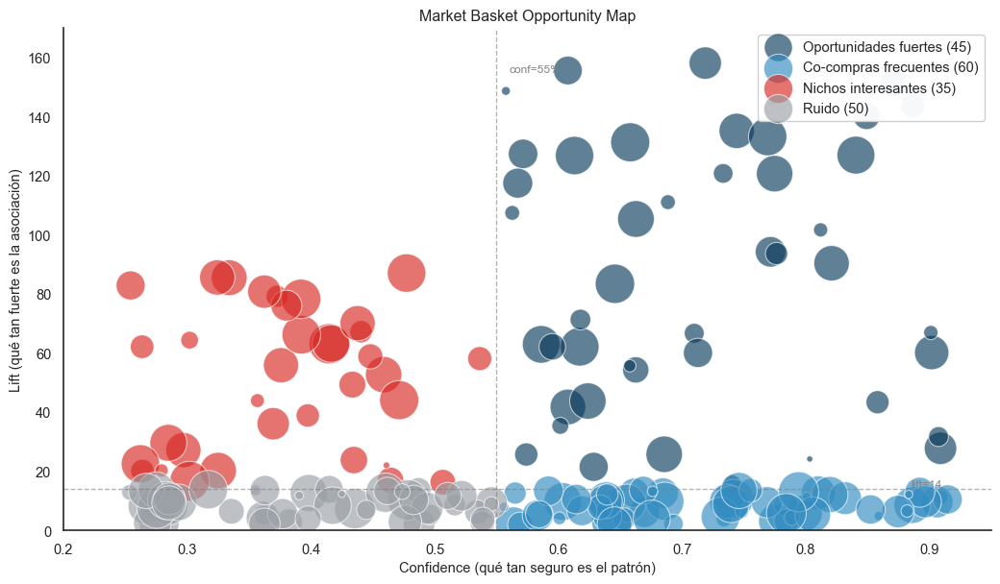

El Market Basket Analysis (MBA) descubre qué productos se compran juntos en una misma orden. La técnica clásica produce reglas del tipo “quien compró A también compró B” con tres métricas asociadas: support, confidence y lift.
En este proyecto aplicamos MBA con una variante importante: lo corremos por segmento, no sobre todo el universo combinado. Esta decisión cambió radicalmente el tipo de reglas que emergen.
1.1 Por qué segmentado y no global
Si calculas MBA sobre todos los clientes juntos, las reglas resultantes son promedio de todos los comportamientos. Eso produce reglas obvias del tipo “memorias junto con discos” — porque ambos productos son populares en general.
Pero los hábitos de compra de un MVP son muy distintos a los de un cliente Ocasional. Las reglas que sirven para activar a uno no son las mismas que para el otro. Al correr el algoritmo dentro de cada segmento de forma independiente, descubrimos:
Reglas con lifts hasta 160× dentro de un segmento (muy específicas y accionables).
Reglas exclusivas que solo aparecen en un cluster, no en otros.
Tabla 1: Reglas generadas por segmento (pipeline weekly)
Segmento
Pedidos multi-familia
Reglas generadas
Umbral support
0
MVPs
165973
2004
0.10%
1
Alto Valor
84198
1269
0.10%
2
En Riesgo
16304
364
0.18%
3
Ocasionales
9331
188
0.32%
4
Hibernando
4489
35
0.67%
1.2 Umbral adaptativo de support
El support es el porcentaje de canastas donde aparece una regla. Si ponemos el mismo umbral para todos los segmentos, los chicos (Hibernando: 4,489 canastas) producen cero reglas, y los grandes (MVPs: 165,973) producen ruido.
Nuestra solución es un umbral híbrido que toma el máximo entre dos criterios:
Con support absoluto = 30 pedidos y support relativo = 0.1%, en MVPs prevalece el relativo (166 pedidos mínimo) y en Hibernando prevalece el absoluto (30 pedidos mínimo). Esto garantiza significancia estadística en segmentos grandes y posibilidad de descubrir patrones en segmentos chicos.
El rumbo que nos hizo tomar: este umbral adaptativo permitió que el segmento Hibernando produjera 35 reglas. Sin él, hubiera producido cero. Ahora marketing tiene reglas accionables incluso para clientes en hibernación.
2. El Market Basket Opportunity Map
2.1 Cuatro cuadrantes de oportunidad
Una tabla de 3,860 reglas no es útil para nadie. Necesitábamos una visualización que permita identificar de un vistazo cuáles son las reglas accionables.
Adoptamos un scatter plot con cuatro cuadrantes (técnica común en business analytics) donde el eje X es confidence, el eje Y es lift y el tamaño de cada burbuja representa el support. Los cuadrantes se definen por la mediana de cada eje en el conjunto mostrado, generando una división balanceada visualmente.
Código
import numpy as npimport matplotlib.pyplot as pltimport seaborn as snssns.set_theme(style="white")# Colores de cuadrantes (replican el dashboard)QUADRANT_COLORS = {"Oportunidades fuertes": "#0B3C5D","Co-compras frecuentes": "#328CC1","Nichos interesantes": "#D82822","Ruido": "#9AA0A6",}np.random.seed(42)# Simulación con la forma cualitativa de la distribución realdef gen_quad(n, conf_range, lift_range): conf = np.random.uniform(*conf_range, n) lift = np.random.uniform(*lift_range, n) sup = np.random.uniform(50, 3000, n)return conf, lift, supquads = {"Oportunidades fuertes": gen_quad(45, (0.55, 0.92), (15, 160)),"Co-compras frecuentes": gen_quad(60, (0.55, 0.92), (2, 14)),"Nichos interesantes": gen_quad(35, (0.25, 0.55), (15, 90)),"Ruido": gen_quad(50, (0.25, 0.55), (2, 14)),}fig, ax = plt.subplots(figsize=(11, 6.5))for nombre, (conf, lift, sup) in quads.items(): ax.scatter(conf, lift, s=sup/3, c=QUADRANT_COLORS[nombre], alpha=0.65, edgecolor='white', linewidth=0.8, label=f"{nombre} ({len(conf)})")# Líneas divisorias en la medianaax.axvline(x=0.55, color='gray', linestyle='--', linewidth=1, alpha=0.6)ax.axhline(y=14, color='gray', linestyle='--', linewidth=1, alpha=0.6)ax.text(0.56, 155, 'conf=55%', fontsize=9, color='gray')ax.text(0.91, 14.5, 'lift=14', fontsize=9, color='gray', ha='right')ax.set_xlabel('Confidence (qué tan seguro es el patrón)', fontsize=11)ax.set_ylabel('Lift (qué tan fuerte es la asociación)', fontsize=11)ax.set_title('Market Basket Opportunity Map')ax.legend(loc='upper right', framealpha=0.95)ax.set_xlim(0.20, 0.95)ax.set_ylim(0, 170)sns.despine()plt.tight_layout()plt.show()

Figura 1: Market Basket Opportunity Map: distribución de reglas en los 4 cuadrantes.
2.2 Cómo se lee el mapa
Cuadrante
Confidence
Lift
Interpretación de negocio
Oportunidades fuertes
Alta (>med)
Alto (>med)
Cross-sell directo. Lo que marketing debe activar primero.
Co-compras frecuentes
Alta (>med)
Bajo (<med)
Bundles muy comunes. Útiles pero no diferenciadores.
Nichos interesantes
Baja (<med)
Alto (>med)
Patrones únicos para audiencias pequeñas pero específicas.
Ruido
Baja (<med)
Bajo (<med)
Probablemente ignorar.
El rumbo que nos hizo tomar: este mapa cambió la forma en que marketing consume el MBA. En lugar de “aquí tienes 3,860 reglas, suerte”, la conversación se vuelve “concéntrate en las 22 reglas del cuadrante Oportunidades fuertes”. El cuadrante reduce la complejidad de tres órdenes de magnitud sin perder información.
2.3 La tabla detallada
Debajo del mapa, el dashboard expone una tabla con todas las reglas filtradas por confidence > 30% y lift > 1.5. La ordenamos por lift descendente, no por confidence. La razón es que confidence alta puede ser engañosa: si un producto se vende en el 90% de los pedidos, cualquier regla que lo incluya tendrá confidence alta. Lift, en cambio, te dice qué tan inusual es la asociación vs el azar — esa es la información accionable.
3. Tres tipos de reglas que producimos
El pipeline genera tres parquets distintos con diferentes propósitos:
3.1 mba_por_segmento.parquet — Vista exploratoria
Todas las reglas que pasan los umbrales mínimos, sin importar el tamaño del antecedente o consecuente. Una sola regla del tipo {A, B, C} → {D, E} (3 antecedentes, 2 consecuentes) cuenta. Para el segmento MVPs, esto da más de 2,000 reglas.
Cuándo usarlo: análisis exploratorio, investigación de comportamientos complejos, generación de hipótesis.
3.2 mba_accionables.parquet — Vista marketing
Solo reglas simples (1→1 o 1→2). Estas son las que marketing puede operativizar en una campaña porque son fáciles de comunicar: “compraste X, te recomendamos Y”.
Adicionalmente, para estas reglas calculamos métricas monetarias específicas:
ticket_medio: ticket promedio de los pedidos que materializan la regla.
revenue_total: suma de revenue de los pedidos que materializan la regla.
n_pedidos: cuántos pedidos en concreto cumplen la regla.
Esto permite priorizar reglas no solo por lift, sino por impacto monetario potencial. Una regla con lift 50× pero solo 60 pedidos detrás puede ser menos importante que una con lift 8× pero 3,000 pedidos detrás.
Nota
Por qué solo se calculan métricas monetarias para accionables: el cálculo es costoso (requiere cruzar items con orders por cada regla). Hacerlo para las 3,860 reglas tomaría minutos extra en cada corrida. Lo limitamos a las accionables (top 30 por lift por segmento) y obtenemos un balance entre velocidad y completitud.
3.3 mba_exclusivas.parquet — Reglas únicas por segmento
Una regla es “exclusiva” si solo aparece en un segmento. Por ejemplo, la regla {Familia_X} → {Familia_Y} puede aparecer en MVPs con lift 40× y al mismo tiempo en Alto Valor con lift 15×. No es exclusiva. Pero si solo aparece en Hibernando, sí lo es.
Cuándo usarlo: identificar bundles diferenciadores para campañas hiper-segmentadas. Si una regla aparece solo en En Riesgo, es un patrón que distingue a ese segmento de los demás — útil para diseñar mensajes de retención específicos.
Tabla 2: Inventario de reglas según tipo (pipeline weekly)
Tipo
Cantidad
Uso típico
0
Por segmento (todas)
3,860 reglas
Análisis exploratorio
1
Exclusivas
1,516 reglas
Campañas diferenciadas
2
Accionables (1→1, 1→2)
141 reglas
Cross-sell operativo
4. Ejemplos ilustrativos del mapa
Para no exponer claves reales del catálogo, los siguientes ejemplos usan familias ofuscadas. La estructura, los lifts y las confidences son auténticos de las reglas que produjo el pipeline.
Interpretación: 9 de cada 10 MVPs que compraron Familia_PK también compraron Familia_MSF. La asociación es 134× más fuerte que el azar. Con 721 pedidos detrás, hay volumen significativo para diseñar una campaña.
Acción de marketing: cuando un MVP entra al portal y agrega Familia_PK al carrito, mostrar Familia_MSF como recomendación destacada. Probabilidad alta de conversión.
Interpretación: la asociación es muy fuerte (92×), pero ocurre en menos de la mitad de los casos. Aplica solo a un subgrupo del segmento En Riesgo.
Acción de marketing: campaña de retención hiper-segmentada. No para todos los clientes En Riesgo, sino para los que históricamente compraron Familia_CC o Familia_RP. Mensaje: “Recuperá tu combo favorito con 15% de descuento”.
4.3 Co-compra frecuente en Alto Valor
Familia_DH → Familia_DH (variantes diferentes de la misma familia)
Segmento: Alto Valor
Confidence: 67%
Lift: 11.3
Support: 1,752 pedidos
Interpretación: confidence muy alta y volumen masivo, pero lift moderado. Es un patrón obvio (clientes de Alto Valor compran múltiples variantes de la misma familia juntos).
Acción de marketing: no requiere campaña activa. Es información para optimizar el catálogo (mostrar variantes juntas en la página de producto) y para forecasting de inventario (pedir variantes en proporciones consistentes).
5. Lo que el MBA segmentado nos enseñó
Tres conclusiones que orientaron el resto del proyecto:
Las reglas son específicas por segmento: las reglas top de MVPs son distintas a las de Hibernando, y eso es información, no ruido. Marketing no debe usar las mismas reglas para todos.
El cuadrante importa más que el ranking: una regla en el cuadrante Oportunidades fuertes vale más que una regla con lift alto pero confidence baja, independientemente del orden de la tabla. Esto se debe enseñar a marketing.
El support es información operativa: una regla matemáticamente fuerte pero con 30 pedidos detrás no soporta una campaña. La columna de support en el dashboard sirve precisamente para filtrar reglas “lindas en papel pero sin volumen real”.
En la siguiente sección documentamos cómo cruzamos estas reglas con el eje temporal para descubrir cuándo se materializa cada bundle.